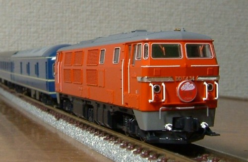
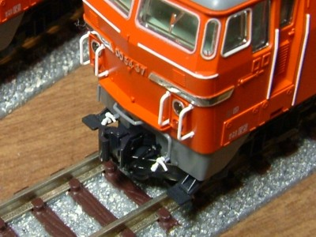
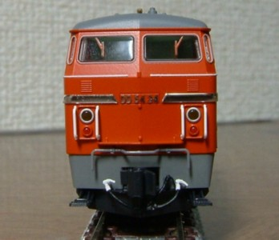
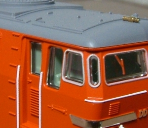
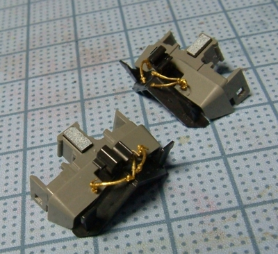

KATOから待ちに待った発売です。
KATOらしいシャープに彫られた側面のモールドがすばらしいです。
DD51やDF50よりも控えめに調色された朱色4号もいい感じです。
元空気ダメ引き通し管と、ブレーキ管を追加しました。
左：追加前 → 右：追加後
元空気ダメ引きとおし管は、「ブルートレイン牽引機」のアイデンティティですからね〜。


元空気ダメ引きとおし管には、ワールド工芸のエアホースを使用してみました。
立派な台座がついているので、出っ張った感じにつくDD54にはちょうどよいです。
ブレーキホースは銀河のものをスカートぎりぎりに取り付け。
ホンモノは元空気ダメ引きとおし管と同じくらい出っ張っているのですが、 そのとおりにつくるとカプラーがまったく動かなくなります…。

運転室の側面窓の隅柱のHゴムのはみ出しをタッチアップしました。
モリタの朱色4号でほとんど同じ色です。
ちなみについている4枚のナンバーのうち、37号機は6次型で厳密には砂箱の大きさが違うそうです。
ホビセンの人に教えてもらったのですが、さすがにこれは知りませんでした…。
枝版の違うタイプも楽しみです。

元空気ダメ引きとおし管と、ブレーキ管を追加のメイキングです。
相棒の20系にも元空気ダメ引きとおし管を追加したくなります。
さっき調べたら、カヤ24用のパーツがどんぴしゃでつきそうです。